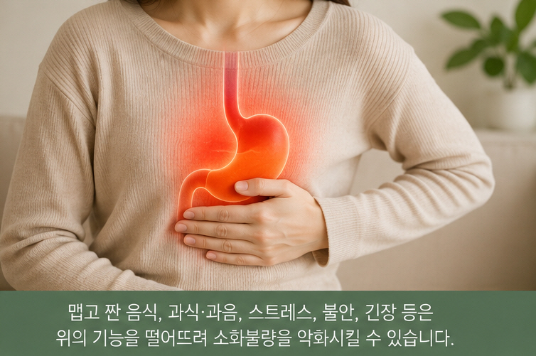
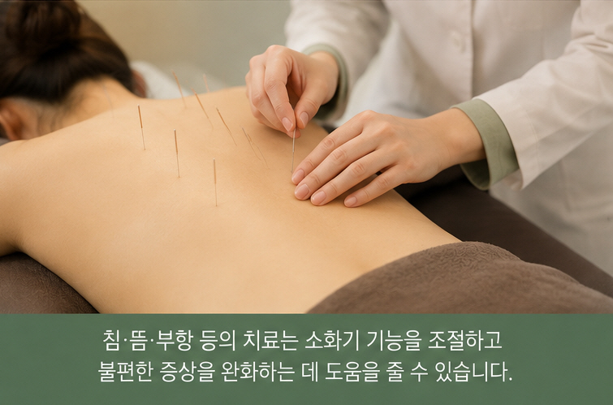
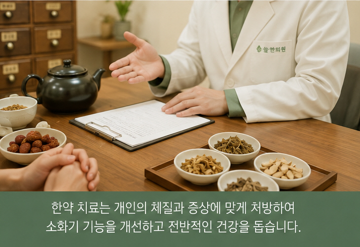

검사에서는 괜찮은데
소화가 계속 불편하신가요?
식후 더부룩함, 조기포만감, 속쓰림, 상복부 불편감, 복부팽만 등이 반복된다면 증상이 언제, 어떤 상황에서 나타나는지 함께 살펴볼 필요가 있습니다.
기능성 소화불량에서 나타날 수 있는 증상
증상의 양상과 정도는 사람마다 다를 수 있습니다.
식후 더부룩함
식사 후 배가 오래 차 있는 느낌이나 불편함이 지속될 수 있습니다.
조기포만감
많이 먹지 않았는데도 금방 배가 부른 느낌이 들 수 있습니다.
속쓰림
상복부나 명치 부위가 쓰리거나 화끈하게 느껴질 수 있습니다.
상복부 불편감
명치 주변이 답답하거나 묵직하게 느껴지는 경우가 있습니다.
복부팽만
배에 가스가 차고 팽팽하게 느껴지는 불편이 있을 수 있습니다.
식욕 변화
소화불편이 반복되면서 식욕이 줄거나 식사량이 달라질 수 있습니다.

검사에서 특별한 이상이 없는데 왜 불편할까요?
기능성 소화불량은 검사에서 증상을 설명할 만한 뚜렷한 구조적 이상이 확인되지 않더라도 소화기 불편이 반복되는 경우를 말합니다.
증상이 언제 시작되었는지, 식사와 어떤 관계가 있는지, 스트레스나 수면 상태에 따라 달라지는지 등을 함께 살펴보는 것이 중요합니다.
스트레스를 받으면 왜 소화가 더 안 될 수 있나요?
위와 장은 자율신경계의 영향을 받으며 움직입니다. 따라서 스트레스, 긴장, 불안이 지속되는 시기에는 소화기 증상도 함께 변하는 경우가 있습니다.
어떤 분은 속쓰림이 심해지고, 어떤 분은 식욕이 떨어지거나 배가 더부룩하고 가스가 차는 느낌을 호소하기도 합니다.
솔솔한의원에서는 소화 증상만 따로 보기보다 수면, 스트레스, 식사습관과 증상의 경과도 함께 확인합니다.
다른 소화기 불편과 함께 나타나기도 합니다
역류성 증상
속쓰림, 신물 올라옴, 가슴이나 목의 불편감 등이 함께 나타날 수 있습니다.
과민성장증후군과 관련된 불편
복통, 복부팽만, 배변 습관 변화 등이 함께 나타나는 경우도 있습니다.
매핵기 · 목의 이물감
목에 무언가 걸린 듯한 느낌이나 답답함이 소화기 증상과 함께 나타나는 경우도 있습니다.
소화가 불편할 때 등도 뻐근한 경우가 있습니다
소화기 불편을 호소하면서 등이나 명치 뒤쪽의 뻐근함, 긴장감 또는 불편함을 함께 이야기하는 분들도 있습니다.
이러한 경우 진료 시 복부 증상뿐 아니라 등 주변의 긴장과 통증도 함께 확인할 수 있습니다.
현재 상태에 따라 다양한 한의진료를 활용합니다
모든 치료를 모든 환자에게 동일하게 시행하지 않습니다.
구체적인 진료 방법은 증상의 양상, 지속기간 및 현재 상태를 확인한 뒤 결정합니다.

한약은 증상과 체질, 전반적인 상태를 함께 살펴 처방합니다
같은 소화불량이라도 식후 더부룩함이 주된 분, 속쓰림이 심한 분, 배에 가스가 많이 차는 분, 식욕이나 배변까지 함께 변한 분 등 증상의 모습은 서로 다를 수 있습니다.
따라서 한약 처방은 현재의 소화 상태뿐 아니라 식욕, 수면, 스트레스, 체질 등을 함께 확인해 상담합니다.
생활관리도 함께 중요합니다
규칙적인 식사
끼니를 지나치게 거르거나 한 번에 과식하는 습관을 줄여보세요.
식후 바로 눕지 않기
식사 후에는 바로 눕기보다 가벼운 활동을 하는 것이 좋습니다.
과식·과음 줄이기
한 번에 많은 양을 먹거나 과도한 음주는 소화기 부담을 높일 수 있습니다.
자극적인 음식 조절
맵고 짜거나 지나치게 기름진 음식이 증상을 악화시키는지 살펴보세요.
규칙적인 운동
무리하지 않는 범위에서 꾸준히 움직이는 습관이 도움이 될 수 있습니다.
나에게 불편한 음식 확인
유제품 등 특정 음식 이후에 증상이 반복된다면 식사와 증상의 관계를 기록해보는 것도 도움이 됩니다.
전통적으로 소화기 불편에 활용되어 온 약재
한 가지 약재만으로 모든 소화기 증상을 해결할 수 있는 것은 아닙니다.
생강
한의학에서는 생강을 따뜻한 성질을 가진 약재로 보고, 속이 차거나 메스꺼움 등 소화기 불편을 살필 때 다양한 처방 구성에 활용해 왔습니다.
진피
귤 껍질을 말린 진피는 전통적으로 더부룩함이나 가스가 차는 느낌 등 소화기 불편을 살필 때 여러 처방에 활용되어 왔습니다.

같은 소화불량이라도 진료 내용은 달라질 수 있습니다
식사만 하면 더부룩한 분과 속쓰림이 주된 분, 스트레스를 받으면 증상이 심해지는 분의 상태는 서로 다를 수 있습니다.
그래서 증상의 종류뿐 아니라 언제 심해지는지, 어떤 음식과 관련되는지, 수면과 스트레스는 어떤지 등을 함께 확인합니다.
소화기클리닉에서 자주 듣는 질문
기능성 소화불량은 어떤 증상이 있나요?
식후 더부룩함, 조기포만감, 상복부 불편감이나 통증, 속쓰림, 복부팽만 등 여러 형태로 나타날 수 있습니다.
검사에서는 이상이 없다고 하는데 왜 계속 불편한가요?
기능성 소화불량은 뚜렷한 구조적 이상이 확인되지 않더라도 위장 기능과 관련된 불편이 반복되는 경우가 있습니다. 증상이 언제, 어떤 상황에서 나타나는지를 함께 살펴보는 것이 중요합니다.
스트레스나 불안이 소화에 영향을 줄 수 있나요?
네. 소화기관은 자율신경계의 영향을 받기 때문에 스트레스나 긴장과 함께 소화기 증상이 달라지는 경우가 있습니다.
역류성 증상과 기능성 소화불량이 함께 나타날 수도 있나요?
속쓰림이나 신물이 올라오는 느낌 등 역류와 관련된 불편이 소화불량 증상과 함께 나타나는 경우도 있습니다.
과민성장증후군과 같이 있을 수도 있나요?
상부 소화기 불편과 함께 복통, 복부팽만, 배변 습관 변화 등을 같이 호소하는 경우도 있습니다.
소화가 안 되는데 왜 등이 뻐근할 수 있나요?
소화기 불편과 함께 등이나 명치 뒤쪽의 긴장감이나 통증을 함께 느끼는 분들도 있습니다. 진료 시 이러한 동반 증상도 함께 확인할 수 있습니다.
침, 뜸, 부항, 한약은 모두 받게 되나요?
아닙니다. 모든 치료를 일괄적으로 시행하지 않고 현재의 증상과 상태에 따라 필요한 진료 방법을 선택합니다.
생활관리에서 가장 중요한 것은 무엇인가요?
규칙적인 식사, 과식과 과음 줄이기, 식후 바로 눕지 않기, 자신에게 불편을 유발하는 음식 확인 등 기본적인 생활습관을 꾸준히 살펴보는 것이 중요합니다.